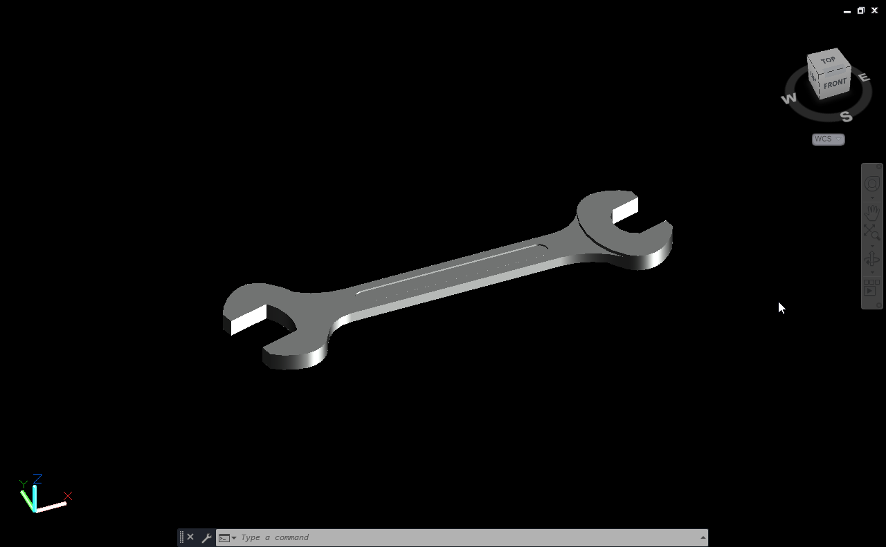
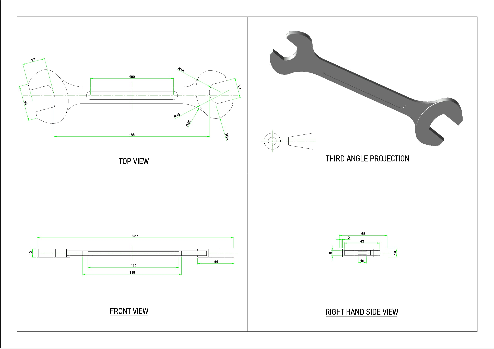

Spanner Modelling
I made this project just out of curiosity. I saw a spanner at home and decided to model it in AutoCAD by taking real measurements using a Vernier caliper.
About Project
I started by sketching the basic outline of the spanner and then converted it into a 3D model step by step. Paying attention to the jaw width and overall proportion helped me understand how real tools are designed with precision.
Even though it was a small casual project, it gave me good practice in accurate dimensioning and 3D modeling. I also learned how simple household objects can be great references for improving modeling skills.